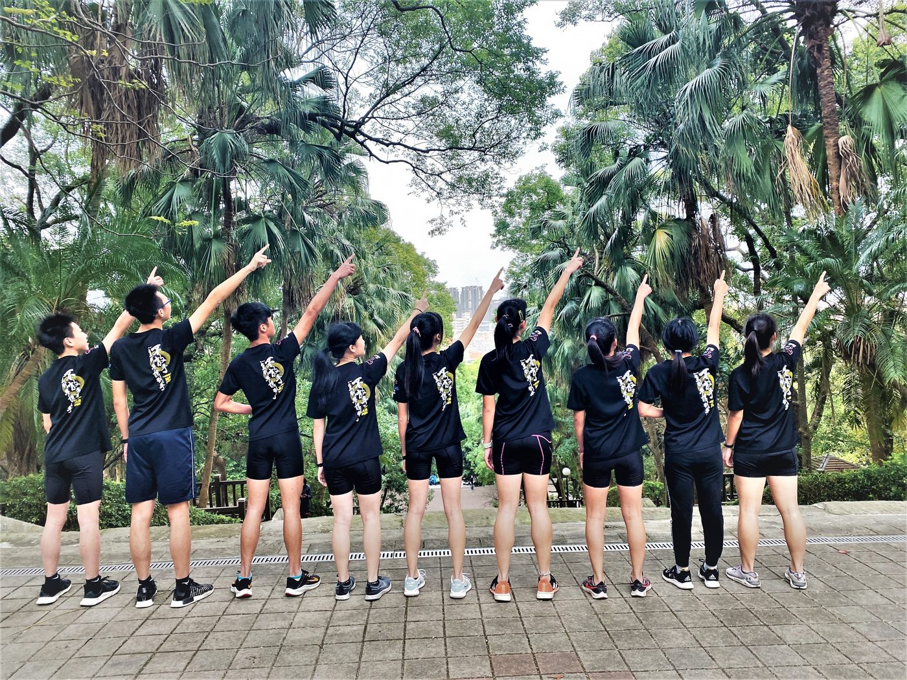
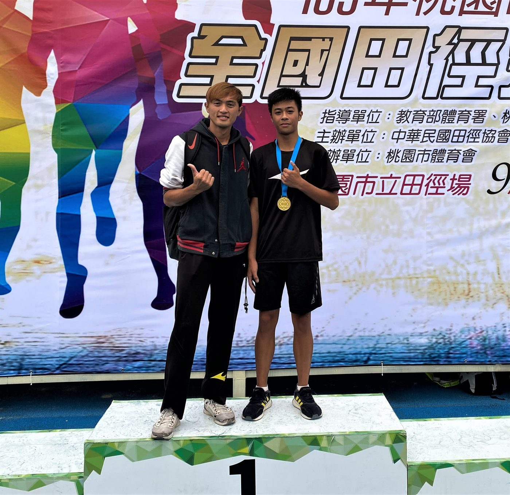
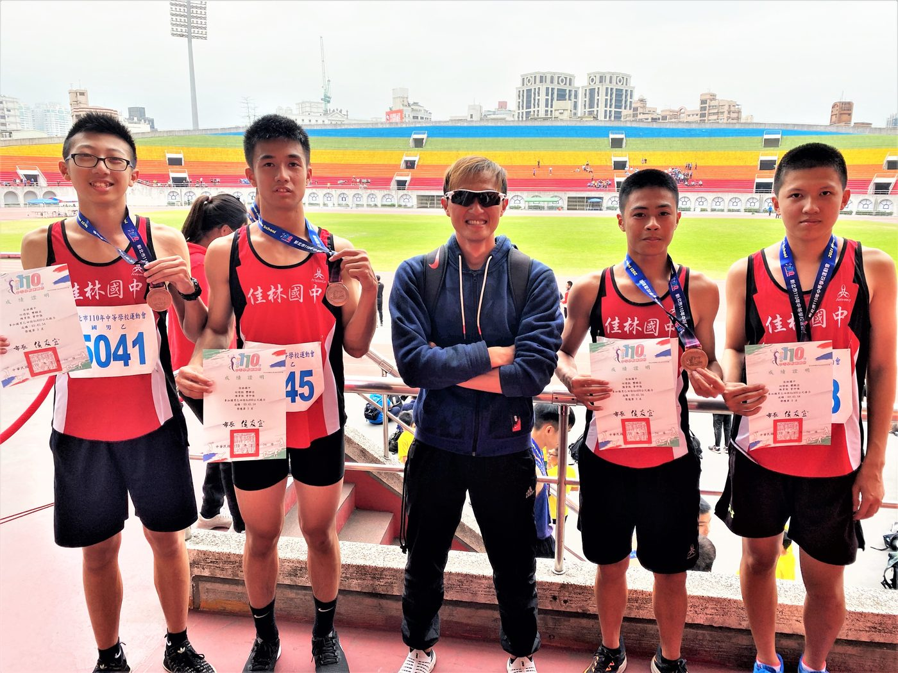
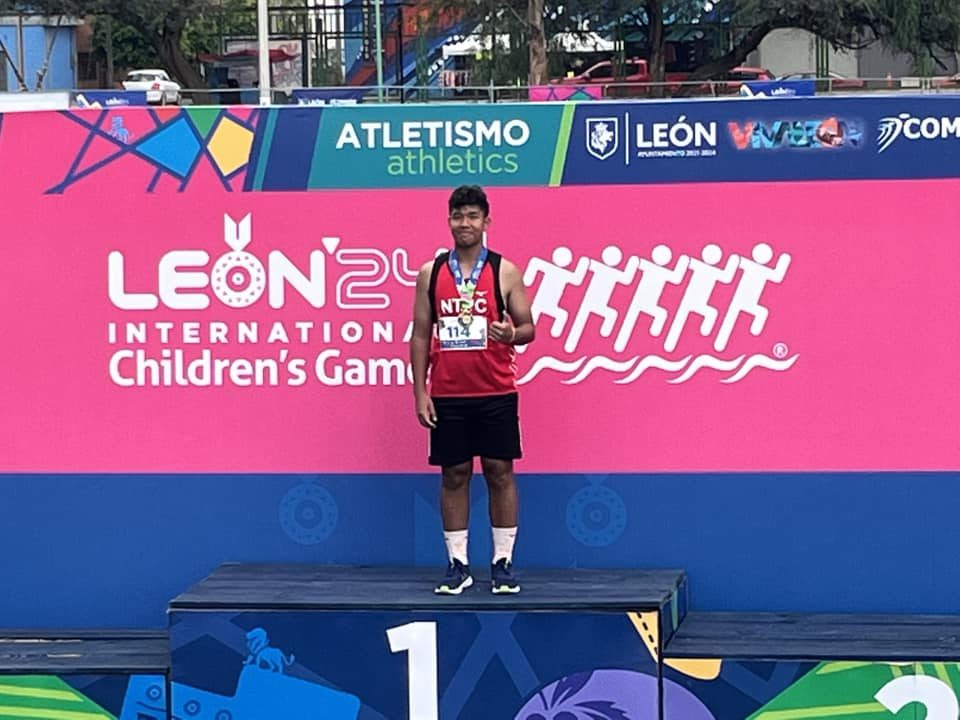

01我的故事




推薦理由
佳林國中田徑隊擁有紮實的訓練體系與全國級的競技潛力。支持本計畫能協助優秀基層選手衝破環境限制，在全國大賽中發光發熱。您的參與將成為孩子突破個人極限、翻轉人生的最強後盾。




佳林國中田徑隊擁有紮實的訓練體系與全國級的競技潛力。支持本計畫能協助優秀基層選手衝破環境限制，在全國大賽中發光發熱。您的參與將成為孩子突破個人極限、翻轉人生的最強後盾。
歷屆成績 · 更新於 2026/06/24
《佳林國中體育班》中學生運動員
佳林國中體育班宣傳影片
佳林國中柯老師體育班帶班經驗分享1前言及入學就要給的觀念
佳林國中柯老師體育班帶班經驗分享2體育班學習是本份且不是只能走體育這條路
訓練與參賽計畫
「佳林國中田徑隊」不僅是培育青少年競技的能力，更是培育青少年品格的搖籃。本計畫致力於基層田徑人才的長期紮根，透過系統化的基礎訓練，協助學子建立正確的運動科學觀念並降低運動傷害風險。
與此同時，我們深信「品德勝於成績」。在日常訓練中，我們極為重視選手的紀律、責任感與團隊合作精神，將田徑場上的韌性轉化為面對人生挑戰的積極態度。
目前隊伍受限於基層經費有限，到外縣市的比賽經費吃緊。我們誠摯邀請企業夥伴支持本計畫，您的資源將直接挹注於基層體育紮根，協助佳林學子在跑道上突破自我，更在人生道路上築夢踏實，成為具備優良品格的未來社會棟樑。
全面提升佳林國中田徑隊的競技實力，目標不僅在於全國賽事奪牌及個人極限突破，更著重培養學生自律、韌性與運動員品德，將企業支持精準轉化為基層體育紮根動能，實現「競技卓越」與「全人教育」的雙贏效益。
我想達到…
基礎體能階段：
核心目標： 提升全身性協調與心肺功能，強化基礎力量以支撐後續高強度訓練。
訓練內容： 長距離慢跑、多向性肌力訓練（徒手或輕重量）、靈活性與關節活動度訓練。
專項體能階段 ：
核心目標： 將基礎體能轉化為專項所需的素質（如爆發力、無氧耐力）。
訓練內容： 短距離衝刺技術、跳躍力訓練、重量訓練（著重於專項肌群）、田徑技術動作優化（起跑、欄架或投擲步法修正）。
賽前調整期：
核心目標： 降低訓練總量，但提升訓練強度，確保身體處於最高敏感度。
訓練內容： 實戰模擬測試、分段速耐力訓練、精確調整各項動作細節、心理意象訓練。
正式比賽期 ：
核心目標： 發揮最佳競技水平，爭取全國賽事佳績。
訓練內容： 以維持手感與充分休息為主，專注於營養補給與賽後疲勞消除。
核心目標： 徹底緩解賽季帶來的生理與心理壓力，預防過度訓練。
訓練內容： 安排低強度的休閒運動（如游泳、趣味球類、登山），針對舊傷進行復健與治療，並與學生面談進行賽季回顧與目標設定。
爆發力訓練： 透過增強式訓練（如跨步跳、深蹲跳、障礙跳）提升下肢推蹬力量，優化起跑與衝刺的瞬時爆發。
專項速耐力： 採間歇訓練法（如 150m-300m 反覆跑），建立高強度運動下的抗乳酸能力，確保後程不失速。
核心穩定與協調： 強化軀幹核心肌群，提升在高速跑動中的身體控制力，減少體能無謂的消耗。
跑姿與步態優化： 透過角錐跑、動作分析修正擺臂角度、抬腿高度及腳掌著地點，提升推動效率。
起跑技術精進： 專注於起跑架的推蹬角度、夾角調整，以及起跑後前 30 公尺的加速轉換流暢度。
分項專業指導： 針對不同項目（如短跑、跨欄、跳部類及擲部類）進行個別技術拆解訓練，確保動作定型且符合科學力學。
配速策略： 針對中長距離或 400 公尺項目，訓練選手依據自身體能分配各路段體力，落實「前段穩定、後段衝刺」的配速計畫。
接力默契與心理戰： 強化 4x100m 與 4x400m 接力的傳接棒時機與助跑節奏；在個人項目中，訓練選手觀察對手起跑反應，保持專注力不受干擾。
比賽情境模擬： 定期舉行測驗賽，模擬正式比賽的檢錄流程、熱身時間分配與抗壓訓練，讓學生在正式全國大賽中能穩定發揮實力。
目標設定與自主激勵： 協助選手設定階段性個人最佳成績，將枯燥訓練轉化為追求卓越的內在動力。
賽前壓力調節： 導入呼吸調節與意象訓練，確保在高強度賽事中能保持冷靜，發揮平時訓練水平。
挫折容忍與競技韌性： 建立面對運動傷害與比賽失利的正確心態，培養「不輕言放棄」的心理強韌度。
生活自律與團隊凝聚： 強化團隊訓練紀律，並透過接力項目培養集體榮譽感與互相扶持的運動員精神。
需求項目與數量（依官方頁面）
| 參賽旅運費 | NT$ 360,000 |
| 參賽旅運費 | NT$ 86,400 |
| 經費需求合計 | NT$ 446,400 |
標示「不公開」者為官方頁面未揭露之欄位。